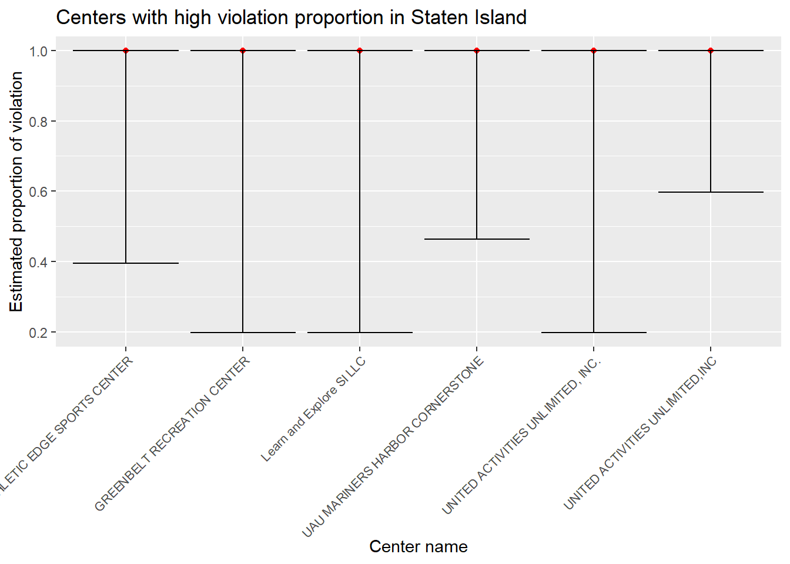
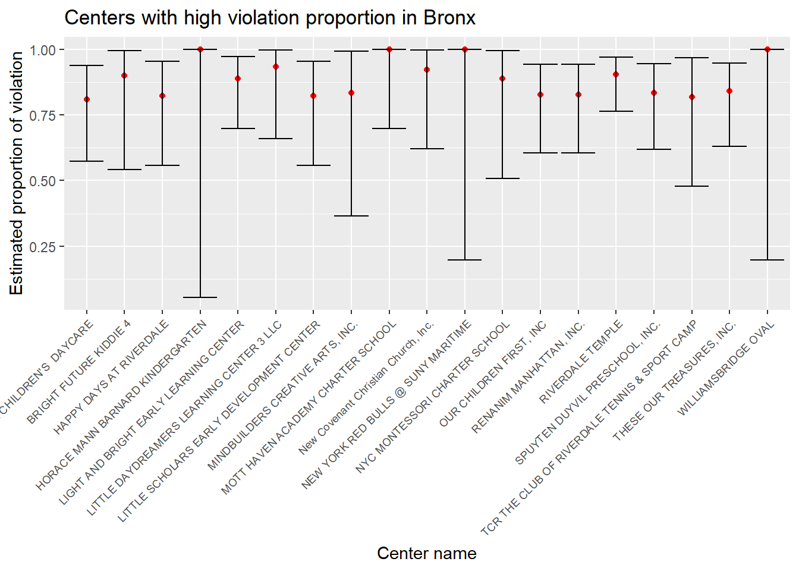
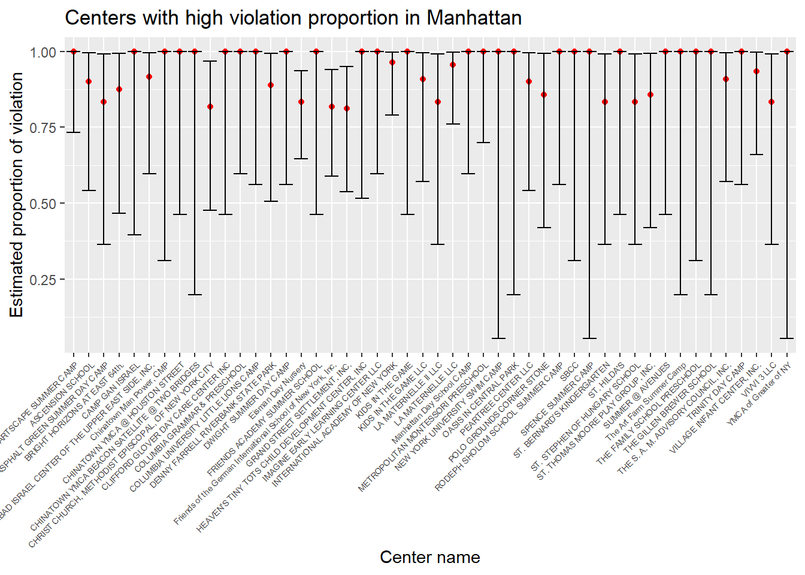
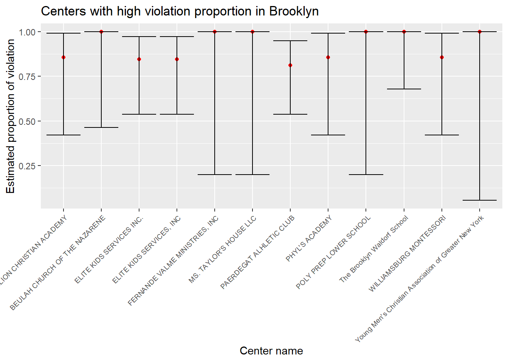
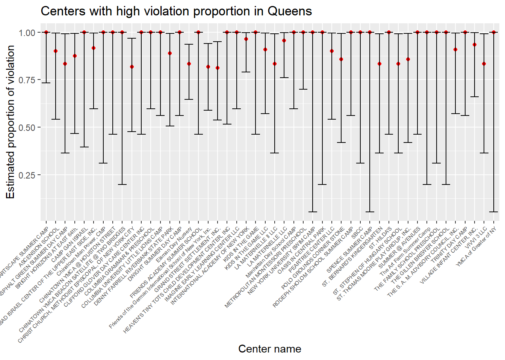

library(tidyverse)
library(dplyr)
library(rvest)
library(purrr)
library(ggplot2)
library(modelr)
library(mgcv)
library(patchwork)
library(viridis)
library(fastDummies)
set.seed(1)
# Initial data cleaning
childcare_inspection_df = read_csv("./data/DOHMH_Childcare_Center_Inspections.csv") %>%
janitor::clean_names() %>%
distinct()
childcare_inspection_df = childcare_inspection_df %>%
select(center_name, borough, zip_code, status, age_range, maximum_capacity,program_type, facility_type,
child_care_type, violation_category,
violation_status,violation_rate_percent:average_critical_violation_rate,regulation_summary,
inspection_summary_result) %>%
drop_na(zip_code, age_range, violation_rate_percent,public_health_hazard_violation_rate, critical_violation_rate) %>%
filter(maximum_capacity != 0) %>%
mutate(
educational_worker_ratio = total_educational_workers/maximum_capacity,
program_type = tolower(program_type),
facility_type = tolower(facility_type),
borough = as.factor(borough),
status = as.factor(status),
program_type = as.factor(program_type),
facility_type = as.factor(facility_type),
child_care_type = as.factor(child_care_type),
age_range = as.factor(age_range)
)
center_specific_df = childcare_inspection_df %>%
relocate(center_name, program_type) %>%
group_by(center_name, program_type) %>%
mutate(
n_na = sum(is.na(violation_category)),
n_violation = sum(!is.na(violation_category)),
rate = n_violation/(n_violation + n_na)) %>%
arrange(center_name, program_type)
### Introduction
We are curious about whether center location is associated with the frequency of their violation. For example, during the past 3 years, would the expected violation case number in a random center in Bronx varies from the expected violation case number in a random center in Manhattan? To explore the answer, We performed ANOVA test across boroughs.
Our hypothesis is:
H0: The average number of violation in each center are not different across boroughs
H1: The average number of violation in each center are not different across boroughs
# select distinct records of each center
center_distinct_df_2 = center_specific_df %>%
select(center_name, program_type, borough, status, maximum_capacity, total_educational_workers, educational_worker_ratio, n_violation, rate) %>%
distinct()
# total violation number of each center
vio_boro = center_distinct_df_2 %>%
group_by(borough, center_name) %>%
summarize(n_violate = sum(n_violation)) %>%
arrange(center_name)
# anova
fit_borough = lm(n_violate ~ borough, data = vio_boro)
anova(fit_borough) %>% knitr::kable(caption = "One way anova of violation frequency and borough")| Df | Sum Sq | Mean Sq | F value | Pr(>F) | |
|---|---|---|---|---|---|
| borough | 4 | 9779.026 | 2444.7565 | 12.75074 | 0 |
| Residuals | 1778 | 340903.777 | 191.7344 | NA | NA |
The p-value of the above Anova test is 3.106e-10. Thus, at 0.05 significance level, we reject the null hypothesis and conclude that during the past 3 years, the average number of violations per center varies across boroughs.
### Introduction
In this dataset, there are three violation types exist: critical violation, general violation and public health hazard violation. We’re interested if the proportion of each type of violation would vary among different boroughs. So we calculated the total number of cases under each violation category in each borough and did a chi-square test to see if this proportion is associated with its location.
Our hypothesis is:
H0: the proportions of ciritical violation among borough levels are equal; AND the proportions of general violation among borough levels are equal; AND the proportions of public health hazard violation among borough levels are equal; vs. H1: not all proportions are equal.
three_violation =
childcare_inspection_df %>%
select(borough, violation_category) %>%
filter(violation_category != "NA") %>%
count(borough, violation_category,) %>%
pivot_wider(
names_from = "violation_category",
values_from = "n"
) %>%
data.matrix() %>%
subset(select = -c(borough))
rownames(three_violation) <- c("Bronx", "Brooklyn", "Manhattan", "Queens", "Staten Island")
three_violation %>%
knitr::kable(caption = "Results Table")| CRITICAL | GENERAL | PUBLIC HEALTH HAZARD | |
|---|---|---|---|
| Bronx | 816 | 798 | 192 |
| Brooklyn | 806 | 797 | 296 |
| Manhattan | 514 | 944 | 204 |
| Queens | 784 | 972 | 270 |
| Staten Island | 80 | 118 | 25 |
chisq.test(three_violation)##
## Pearson's Chi-squared test
##
## data: three_violation
## X-squared = 118.01, df = 8, p-value < 2.2e-16At 0.05 significance level, χ2>χcritical, with p-value < 2.2e-16. Thus, we reject the null hypothesis and conclude that there is sufficient evidence that the proportion of violation category is significantly different by borough.
### Introduction
With the belief that violation record is an important parameter to evaluate the performance of a child healthcare center, we conducted a proportion test to estimate the total violation proportion and its 95% confidence interval for each center, regardless of its program type. We defined the estimated total violation proportion > 0.8 as high proportion. Next, we pinpointed all the centers with high violation proportion in each borough.
# Divide the inspection results as violated vs. not violated
vio_sum =
center_specific_df %>%
mutate(
verdiction = case_when(
violation_category == "NA" ~ "not violated",
violation_category == "GENERAL" ~ "violated",
violation_category == "CRITICAL" ~ "violated",
violation_category == "PUBLIC HEALTH HAZARD" ~ "violated")
) %>%
select(center_name, program_type, borough, verdiction)
# Summary of the total number of inspection and the total number of violation within center
verdiction_center =
vio_sum %>%
mutate(verdiction = as.character(verdiction)) %>%
group_by(center_name,borough) %>%
summarize(
inspect_total = n(),
inspect_vio = sum(!is.na(verdiction)))# prop.test for all centers in staten island
center_prop_staten =
verdiction_center %>%
filter(borough == "STATEN ISLAND") %>%
mutate(
prop_result = map2(.x = inspect_vio, .y = inspect_total, ~prop.test(x = .x, n = .y)),
tidy_result = map(.x = prop_result, ~broom::tidy(.x))
) %>%
select(-prop_result) %>%
unnest(tidy_result) %>%
select(center_name, estimate, conf.low, conf.high)
# a plot that shows the estimates and CIs for each center in staten island with the proportion of violation greater than 0.8
center_prop_staten %>%
filter(estimate > 0.8) %>%
mutate(center_name = factor(center_name)) %>%
mutate(center_name = forcats::fct_reorder(center_name, estimate)) %>%
ggplot(aes(x = center_name, y = estimate)) +
geom_point(color = "red") +
geom_errorbar(aes(ymin = conf.low, ymax = conf.high)) +
theme(axis.text.x = element_text(angle = 45, hjust = 1, size = rel(0.9))) +
labs( x = "Center name",
y = "Estimated proportion of violation",
title = "Centers with high violation proportion in Staten Island")
# prop.test for all centers in Bronx
center_prop_bronx =
verdiction_center %>%
filter(borough == "BRONX") %>%
mutate(
prop_result = map2(.x = inspect_vio, .y = inspect_total, ~prop.test(x = .x, n = .y)),
tidy_result = map(.x = prop_result, ~broom::tidy(.x))
) %>%
select(-prop_result) %>%
unnest(tidy_result) %>%
select(center_name, estimate, conf.low, conf.high)
# a plot that shows the estimates and CIs for each center in Bronx with violation proportion greater than 0.8
center_prop_bronx %>%
filter(estimate > 0.8) %>%
mutate(center_name = factor(center_name)) %>%
mutate(center_name = forcats::fct_reorder(center_name, estimate)) %>%
ggplot(aes(x = center_name, y = estimate)) +
geom_point(color = "red") +
geom_errorbar(aes(ymin = conf.low, ymax = conf.high)) +
theme(axis.text.x = element_text(angle = 45, hjust = 1, size = rel(0.8))) +
labs( x = "Center name",
y = "Estimated proportion of violation",
title = "Centers with high violation proportion in Bronx")
# prop.test for all centers in Manhattan
center_prop_manhattan =
verdiction_center %>%
filter(borough == "MANHATTAN") %>%
mutate(
prop_result = map2(.x = inspect_vio, .y = inspect_total, ~prop.test(x = .x, n = .y)),
tidy_result = map(.x = prop_result, ~broom::tidy(.x))
) %>%
select(-prop_result) %>%
unnest(tidy_result) %>%
select(center_name, estimate, conf.low, conf.high)
# a plot that shows the estimates and CIs for each center in Manhattan with violation proportion greater than 0.8
center_prop_manhattan %>%
filter(estimate > 0.8) %>%
mutate(center_name = factor(center_name)) %>%
mutate(center_name = forcats::fct_reorder(center_name, estimate)) %>%
ggplot(aes(x = center_name, y = estimate)) +
geom_point(color = "red") +
geom_errorbar(aes(ymin = conf.low, ymax = conf.high)) +
theme(axis.text.x = element_text(angle = 45, hjust = 1, size = rel(0.6))) +
labs( x = "Center name",
y = "Estimated proportion of violation",
title = "Centers with high violation proportion in Manhattan")
# prop.test for all centers in Brooklyn
center_prop_brooklyn =
verdiction_center %>%
filter(borough == "BROOKLYN") %>%
mutate(
prop_result = map2(.x = inspect_vio, .y = inspect_total, ~prop.test(x = .x, n = .y)),
tidy_result = map(.x = prop_result, ~broom::tidy(.x))
) %>%
select(-prop_result) %>%
unnest(tidy_result) %>%
select(center_name, estimate, conf.low, conf.high)
# a plot that shows the estimates and CIs for each center in Brooklyn with violation proportion greater than 0.8
center_prop_brooklyn %>%
filter(estimate > 0.8) %>%
mutate(center_name = factor(center_name)) %>%
mutate(center_name = forcats::fct_reorder(center_name, estimate)) %>%
ggplot(aes(x = center_name, y = estimate)) +
geom_point(color = "red") +
geom_errorbar(aes(ymin = conf.low, ymax = conf.high)) +
theme(axis.text.x = element_text(angle = 45, hjust = 1, size = rel(0.8))) +
labs( x = "Center name",
y = "Estimated proportion of violation",
title = "Centers with high violation proportion in Brooklyn")
# prop.test for all centers in Queens
center_prop_queens =
verdiction_center %>%
filter(borough == "QUEENS") %>%
mutate(
prop_result = map2(.x = inspect_vio, .y = inspect_total, ~prop.test(x = .x, n = .y)),
tidy_result = map(.x = prop_result, ~broom::tidy(.x))
) %>%
select(-prop_result) %>%
unnest(tidy_result) %>%
select(center_name, estimate, conf.low, conf.high)
# a plot that shows the estimates and CIs for each center in Queens with violation proportion greater than 0.8
center_prop_manhattan %>%
filter(estimate > 0.8) %>%
mutate(center_name = factor(center_name)) %>%
mutate(center_name = forcats::fct_reorder(center_name, estimate)) %>%
ggplot(aes(x = center_name, y = estimate)) +
geom_point(color = "red") +
geom_errorbar(aes(ymin = conf.low, ymax = conf.high)) +
theme(axis.text.x = element_text(angle = 45, hjust = 1, size = rel(0.6))) +
labs( x = "Center name",
y = "Estimated proportion of violation",
title = "Centers with high violation proportion in Queens")
From the plots, we can see the names and estimates of the centers with high violation proportion in each borough. These plots can serve as good reference for NYC residents when selecting the childcare centers for their kids.